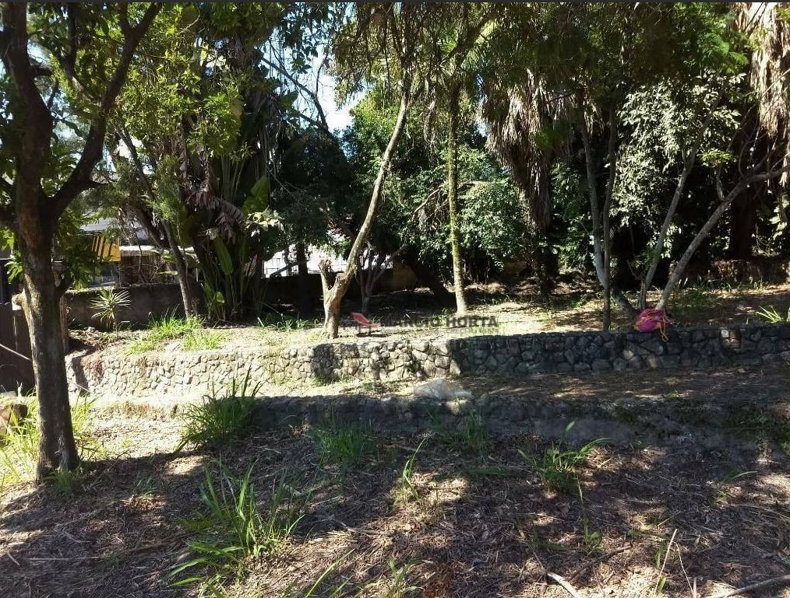
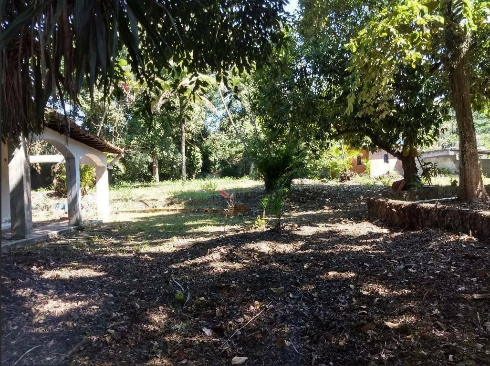
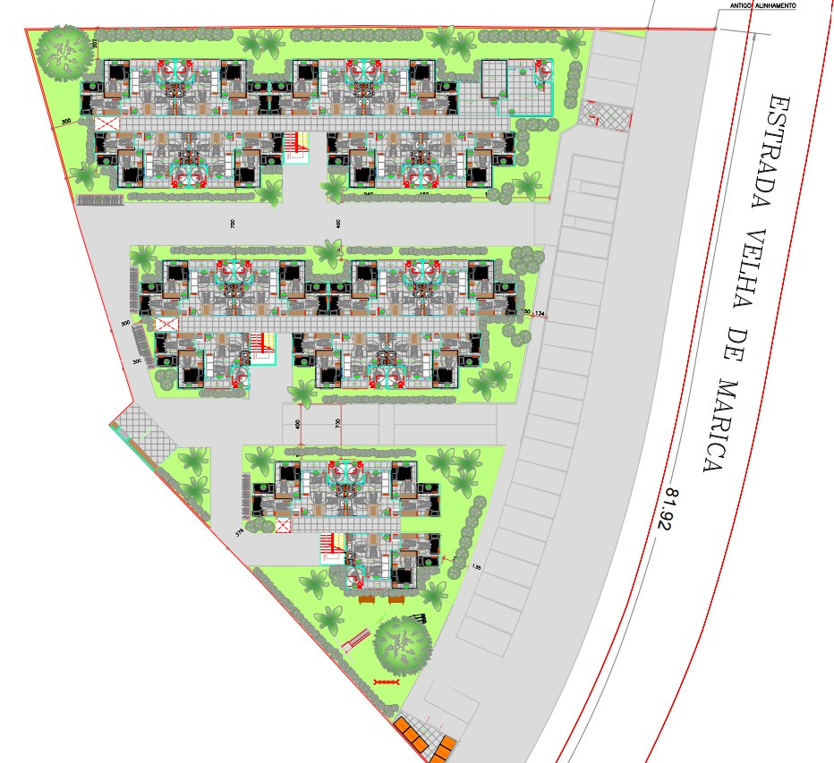
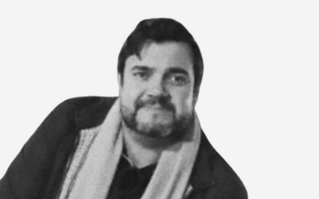

75
unidades habitacionais
Multifamiliar MCMV Faixa 1 (FAR)
Incorporação · Multifamiliar MCMV
O lugar
Um terreno de 3.367 m² em Rio do Ouro, Niterói — área em expansão urbana, ligada à Região Oceânica, perto de emprego, comércio e serviços, e com um ambiente residencial mais tranquilo. É aqui que nasce o Vale Verde: 75 novos lares de interesse social.
O projeto

O terreno hoje
Terreno arborizado, com muros de pedra e topografia suave — um desnível de apenas 4 metros em toda a área, segundo o levantamento de curvas de nível.

Localização
Estrada Velha de Maricá, 264/A
Rio do Ouro · Niterói · RJ
No entorno
Enquadramento urbanístico
Pré-projeto

Bloco A Bloco B Bloco C Estrada Velha de MaricáSimulação 4D · BIM
Maquete gerada a partir do pré-projeto: unidade tipo, implantação e fachadas. Role para avançar 18 meses de obra.
Volumetria a partir do pré-projeto; cronograma ilustrativo.
A unidade · maquete 3D
2 quartos, sala e cozinha integradas, banheiro acessível e varanda, modelados a partir da planta do pré-projeto.
Layout com áreas de giro para cadeira de rodas (NBR 9050); mobiliário ilustrativo.
Quem faz
Incorporador & Arquiteto
Valor DesenvolvimentoDesenvolvimento de produtos imobiliários da concepção à gestão estratégica, com foco em parcerias, estruturação de SPEs e valorização de terrenos.
Incorporador & Finanças
Valor DesenvolvimentoPós-graduado em Investimentos Imobiliários. Captação de recursos, planejamento estratégico e estruturação de projetos com ênfase em retorno e viabilidade.
Arquiteto & Urbanista
Valor DesenvolvimentoMais de 15 anos em empreendimentos, com passagem pela Tenda e projetos MCMV e de alto padrão. Projetos, compatibilização e acompanhamento de obras.
Advogado
Valor DesenvolvimentoDireito empresarial, com escritórios em São Paulo e Nova York. Governança corporativa, contratos comerciais e planejamento patrimonial.
Administrador
Século ConstrutoraGestão e coordenação de empreendimentos, relacionamento com parceiros e articulação institucional, na interface entre desenvolvimento e execução.

Engenheiro
Século ConstrutoraCoordenação de obras e gestão operacional, com acompanhamento técnico de prazo, custo e qualidade na execução.
Status